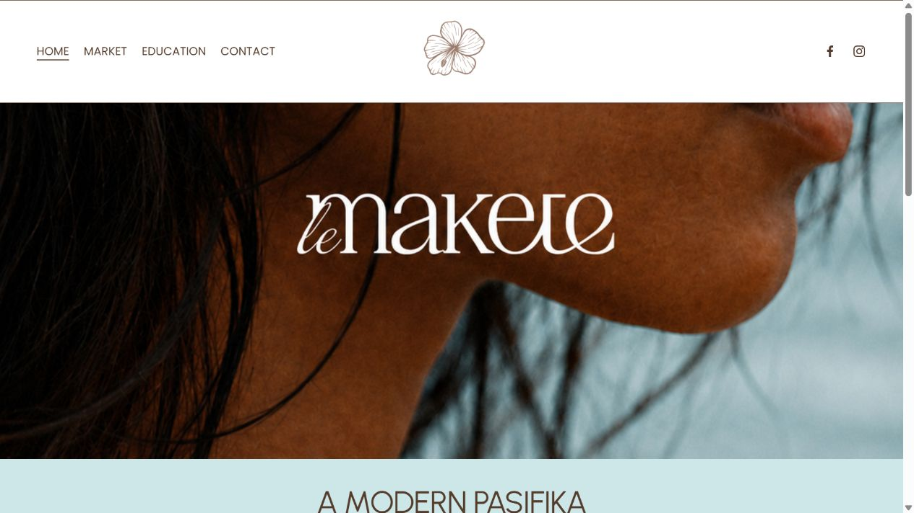

Current website

Current homepage — above-the-fold capture from lemakete.com, 24 August 2026. Visit official site ↗
A digital direction for Le Makete
A connected online experience that brings Pacific community markets, practical workshops and the journey of aspiring vendors together in one welcoming place.
Concept prepared by Synca

Current presence → proposed direction
This preview focuses on what Le Makete’s online presence could become while staying honest about the information available.

Current homepage — above-the-fold capture from lemakete.com, 24 August 2026. Visit official site ↗
A warm, energetic direction shaped around discovery, participation and community.
Opportunities I noticed
The strongest opportunity is not simply a new look. It is creating a clearer path between discovering Le Makete, learning through a workshop and taking the next step toward becoming a vendor.
The live homepage already includes a calendar. Giving upcoming markets clearer summaries and direct next actions would make that useful information faster to scan.
Applying to trade is available through the navigation. A prominent homepage pathway could help aspiring vendors recognise that opportunity sooner.
The From Idea to Market workshop has a detailed, practical offer. Surfacing it earlier would connect learning, preparation and market participation more clearly.
Facebook, Instagram, market information, the workshop waitlist and contact details can lead into one consistent journey instead of feeling like separate destinations.
Why upgrading your website matters
It can help people understand where they belong in the Le Makete community and what action they can take next.
Clarity builds confidence.A considered, consistent experience helps Le Makete’s purpose feel as thoughtful online as it is in the community.
Clear pathways can help visitors distinguish between attending a market, joining a workshop and exploring the vendor journey.
A focused mobile layout gives people a practical destination when they arrive from social posts, referrals or community sharing.
One reliable digital home gives campaigns and community stories somewhere useful to lead.
Website concept
The concept brings markets, workshops and community purpose into a single narrative. Strong calls to action help each audience find a relevant next step without losing the warmth and cultural character of the brand.
Facebook presence
A clear cover image can quickly introduce the relationship between community markets and practical workshops, while staying visually connected to the website and social system.

What this could become
The concept can begin as a focused website and grow only where it genuinely helps Le Makete serve its community.
A clear home for the purpose, markets, workshops and participation pathways.
A consistent system that turns each story into part of a wider journey.
Simple next steps for people who want to attend, learn or explore becoming a vendor.
A foundation that can evolve alongside the community without becoming overcomplicated.
I came across Le Makete and could see an opportunity to bring the markets, workshops and vendor journey together more clearly online, so I created these ideas to show what that direction could feel like.
Why I created this
This is an early creative direction intended to make the opportunity tangible. It can be refined around Le Makete’s real priorities, content and community knowledge.
Built with purpose ♡A conversation, when it suits you
If this feels aligned with where Le Makete is heading, I’d be happy to talk through the thinking and explore what a practical next step could look like.
No pressure — just a chance to see whether the direction fits.
Social media direction
One flexible system. Many community stories.
A recognisable social style can give Le Makete room to share market moments, workshop education, vendor journeys and invitations while keeping every post connected.
Consistent — never repetitive.